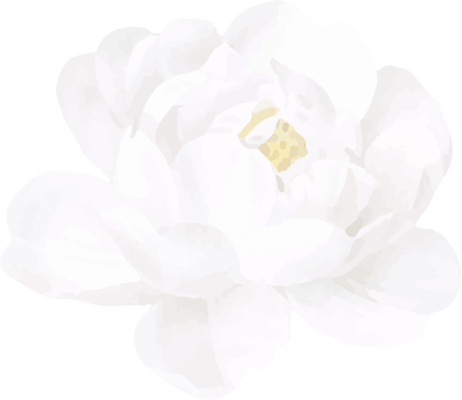

“Dan Allah menjadikan bagimu pasangan (suami atau istri) dari jenis
kamu sendiri, menjadikan anak dan cucu bagimu dari pasanganmu, serta
memberimu rezeki dari yang baik-baik. Mengapa mereka beriman kepada
yang batil dan mengingkari nikmat Allah?”
QS. An Nahl Ayat 72